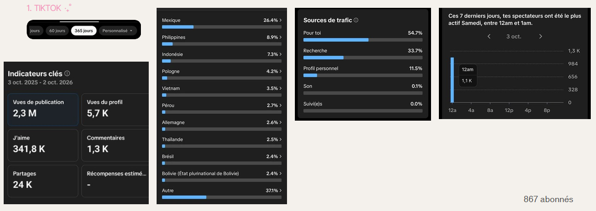
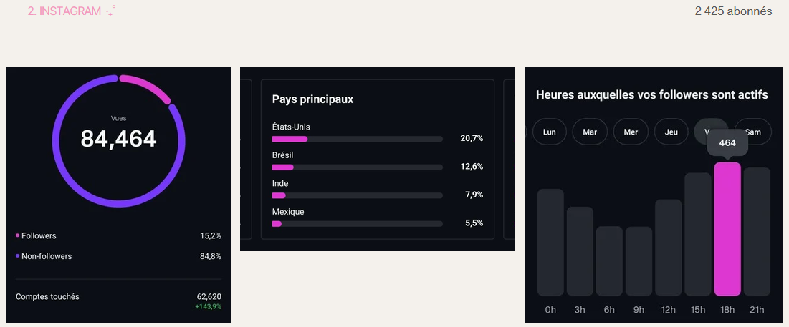

Contexte de création ✧˖°.
‧˚ʚ Création de Reels Instagram et de vidéos TikTok autour des tendances actuelles (films, séries et musique) sur le logiciel Adobe After Effects. L'objectif est de développer mon sens du rythme, du storytelling visuel sur des formats courts et de comprendre les mécanismes de viralité sur les réseaux sociaux.
‧˚ʚ Cette démarche m'a permis d'obtenir des résultats concrets et d'atteindre une large audience :
➤ Performances TikTok (Mois de mai) : Visibilité forte avec 837 000 vues de publication, 112 000 j'aime, 13 000 partages et 747 commentaires.
➤ Statistiques Instagram : Communauté engagée de 2 169 abonnés et 51 399 vues de compte sur la dernière période (dont 83,3% de non-abonnés touchés).
‧˚ʚ Ces résultats confirment mon aptitude à lier l'esthétique créative à la performance analytique, ce qui conforte mon choix de spécialisation dans le parcours Création Numérique.
Démarche & Réalisation ✧˖°.
‧˚ʚ Le succès d'audience des mes vidéos s'appuie sur une méthodologie rigoureuse en trois piliers :
➤ Une veille et un choix de pistes musicales les plus virales en accord avec les attentes des utilisateurs visés.
➤ Une optimisation du temps de visionnage basée sur l'analyse approfondie du watch time afin d'ajuster le rythme du montage et limiter l'abandon des spectateurs.
➤ Un montage dynamique dès le départ capte l'algorithme, maximisant ainsi mes chances d'apparaître dans les suggestions des utilisateurs : le flux "Pour Toi" de TikTok et l'onglet Explorer d'Instagram.
Les résultats ✧˖°.
‧˚ʚ Pour réalisée mes montages, je m’appuis sur données quantitatives pertinentes et des outils statistiques adaptés. En premier, j'analyse des indicateurs de performance, c'est-à-dire que je regarde comment mon public réagit à tes visuels pour voir le type de montage qui fonctionne le mieux. Ensuite, j'écoute et j'observe les utilisateurs en Il s'agit de prêtant attention aux commentaires, aux retours ou aux interactions de ma communauté.

Statistiques clés de TikTok,
affichant 715 abonnés, ainsi que la répartition des vues (notamment 912,8K vues de
publications et 122,3K j'aimes) et une visibilité propulsée à 63,3 % par le fil « Pour toi
».
Données de la plateforme TikTok.

Statistiques clés
d'Instagram, affichant 2 233 abonnés, ainsi que la répartition des vues (notamment 84 464
vues au total dont 84,8 % proviennent de non-abonnés) et une forte activité des followers
concentrée autour de 18h.
Données de la plateforme Instagram.
Mes styles de montage ✧˖°.
Librairie de mes montages préférés

"Publiés sur TikTok et Instagram"
Edit
Montage ultra-rythmés axé sur le rythme de la musique et la fluidité entre les clips avec des effets de secousses et de zooms, mettant en scène des icônes ou des personnages cultes. ♡
Michael Jackson du film Michael
Daenerys Targaryen de la série Game Of Thrones
Transition Edit
Montage dynamique et rythmé mettant en valeur la synchronisation audio et la fluidité des transitions. ♡
Nami du manga One Piece
Lyrics Edit
Animation typographique dynamique et rythmée intégrant les paroles d'une musique. ♡
Beat It - Michael Jackson
Human Nature - Michael Jackson
Don't Stop 'Til You Get Enough - Michael Jackson
Movie Edit
Montage vidéo dynamique et esthétique qui synchronise des extraits de films et de séries sur le rythme d'une musique. ♡
Saga Hunger Games
Saga Matrix
Smooth Edit
Montage vidéo rythmé qui utilise des ralentis fluides, des transitions dynamiques et des effets visuels pour synchroniser parfaitement des extraits de personnages films ou de séries sur une musique. ♡
Tina Carlyle - The Mask
Elena Gilbert - The Vampire Diaries
Blair Waldorf - Gossip Girl
Aesthetic Edit
Montage vidéo qui combine un effet de turbulence, des overlays aesthetic et des images par seconde (fps) réduites pour donner un style soft. ♡
Elena Gilbert - The Vampire Diaries
Aimee Lou Wood - Sex Education
Character Edit
Montage vidéo rythmé centré sur un personnage de fiction pour mettre en valeur ses moments marquants ou son esthétique. ♡
Harmonie - Mario Galaxy Le Film